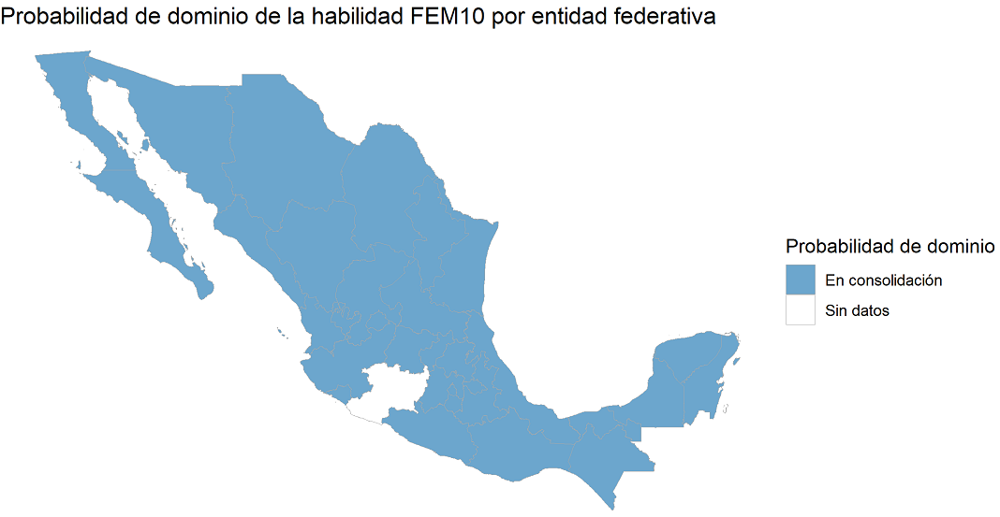

<div class="blurb">

	<h1><b>FEM10:</b> Representación del modelo aritmético para calcular el perímetro de una figura geométrica (triángulo o cuadrilátero)</h1>
	<center>
	
	</center>
 	
</div><!-- /.blurb -->
